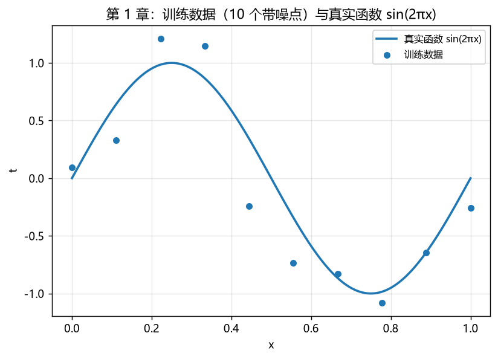
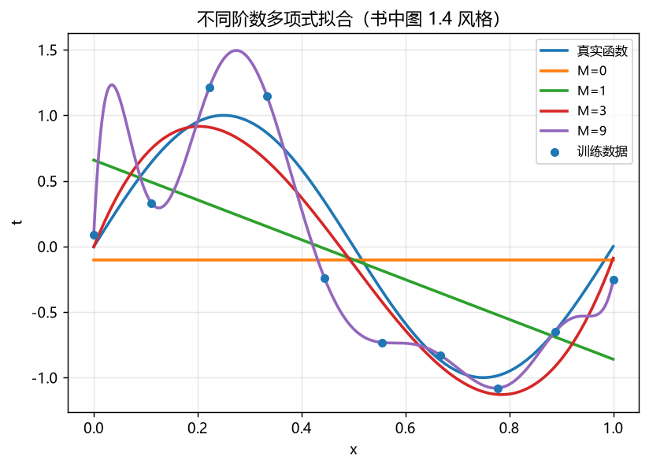
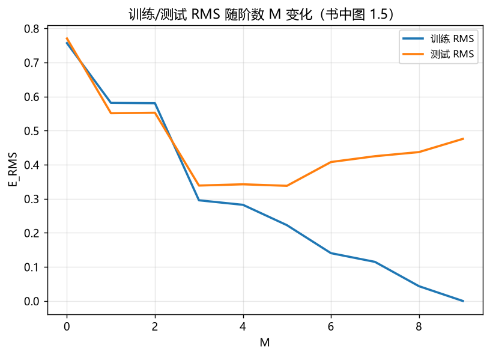
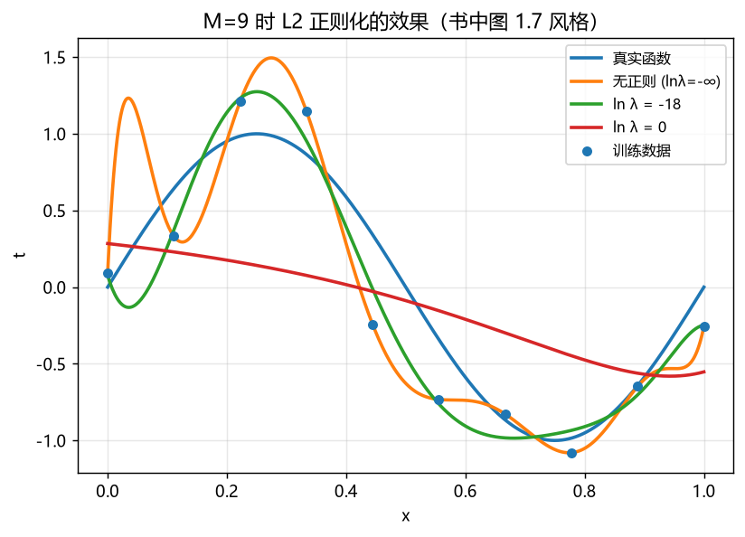
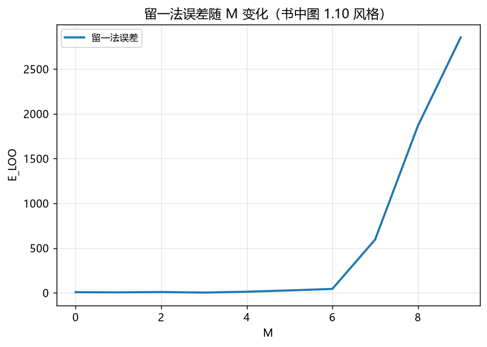

对应《Deep Learning: Foundations and Concepts》1.2–1.3 节（PDF p.4–14）。每张图下方有"看什么"提示。

看什么：10 个黑点是带噪观测 t = sin(2πx) + ε；蓝线是我们要逼近的真实函数。 我们只能看到黑点，目标是"猜出"蓝线。

看什么：M=0 是水平线（欠拟合，完全没抓住形状）；M=1 是直线；M=3 已经很贴近真实函数； M=9 疯狂振荡穿过所有点——它记住了噪声，而不是学到了规律。

看什么：橙线（测试 RMS）先降后升的 U 形就是"泛化误差"曲线，最低点附近是最优复杂度。 蓝线（训练 RMS）一路下降——训练误差低不代表模型好。

看什么：无正则（绿线）振荡剧烈；lnλ=-18（红线）被拉回平滑； lnλ=0（黄线）过度平滑。正则化强度 λ 是个需要调的天平。

看什么：LOO 误差在 M=3 处最低——不碰测试集就选出了最优阶数，与书中结论一致。 对比图 3 里"测试集最优 M=5"，体会为什么模型选择不能用测试集。